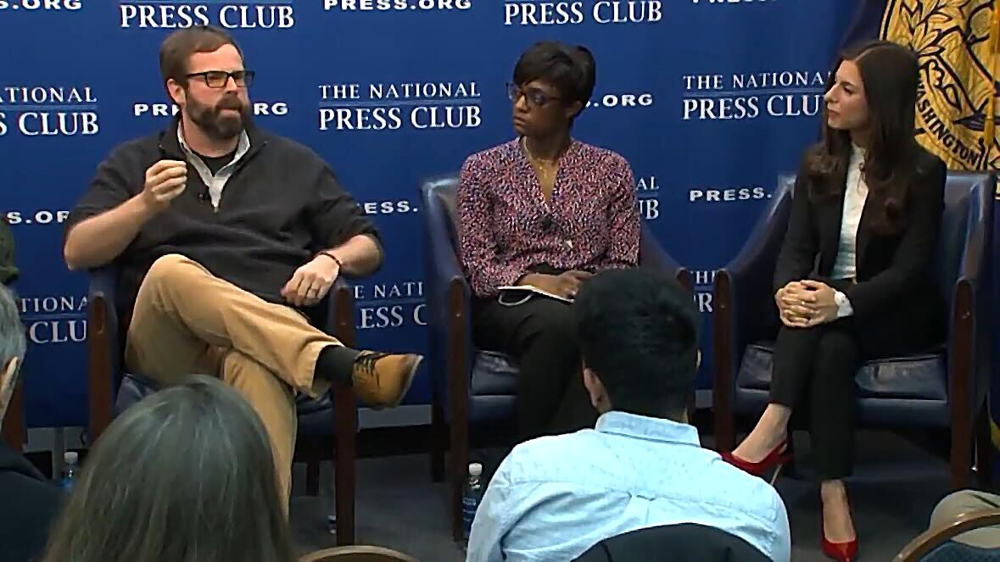

Kevin Grant
Nonprofit news leader
About

Kevin is the executive director of Allbritton Journalism Institute. He co-founded The GroundTruth Project — home of Report for America and Report for the World — in 2014, editing and publishing award-winning journalism with leading partners and helping to create more than 1,000 full-time and fellowship roles with hundreds of newsroom partners in dozens of countries. He holds an M.A. in journalism from the University of Southern California’s Annenberg School, where he was a Dean’s Scholar. He’s an adjunct professor at Georgetown University, sits on the board of Gigafact, rescues greyhounds and enjoys the Blue Ridge Mountains.
